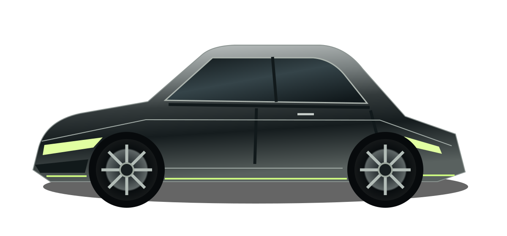

Полировка кузова
Убираем мелкие царапины и возвращаем глубину цвета. Подбираем обработку после осмотра покрытия.
- Деликатная подготовка
- Коррекция лака
от 60 000 ₸↗
АЛМАТЫ / ЭСТЕТИКА И ЗАЩИТА
01 — PRECISION CAREСохраняем то самое чувство
нового автомобиля. Каждый день.

01 / ЧТО МЫ ДЕЛАЕМ
Убираем мелкие царапины и возвращаем глубину цвета. Подбираем обработку после осмотра покрытия.
Дополнительный защитный слой, выразительный блеск и более простой повседневный уход.
Тщательная очистка ткани, кожи и труднодоступных мест с вниманием к каждому материалу.
02 / НАШ ПОДХОД
Понятный процесс от первого осмотра
до финального отражения.
Оцениваем состояние автомобиля и обсуждаем желаемый результат.
Фиксируем перечень работ, стоимость и срок до начала обработки.
Показываем выполненную работу и даём рекомендации по уходу.
03 / ПЕРЕД ВИЗИТОМ
Срок зависит от размера автомобиля, состояния покрытия и выбранной услуги. Точное время согласуем после осмотра.
Нет. Подготовительная мойка входит в процесс обработки кузова. Детали уточним при согласовании услуги.
Указанные цены — стартовые. Для расчёта нужны модель автомобиля, описание состояния и осмотр.
ВАШ АВТОМОБИЛЬ ЗАСЛУЖИВАЕТ БОЛЬШЕГО
ДОБАВИМНапишите о своём автомобиле.
Подберём подходящий уход.
Демонстрационный проект.
Цены и контакты вымышлены.